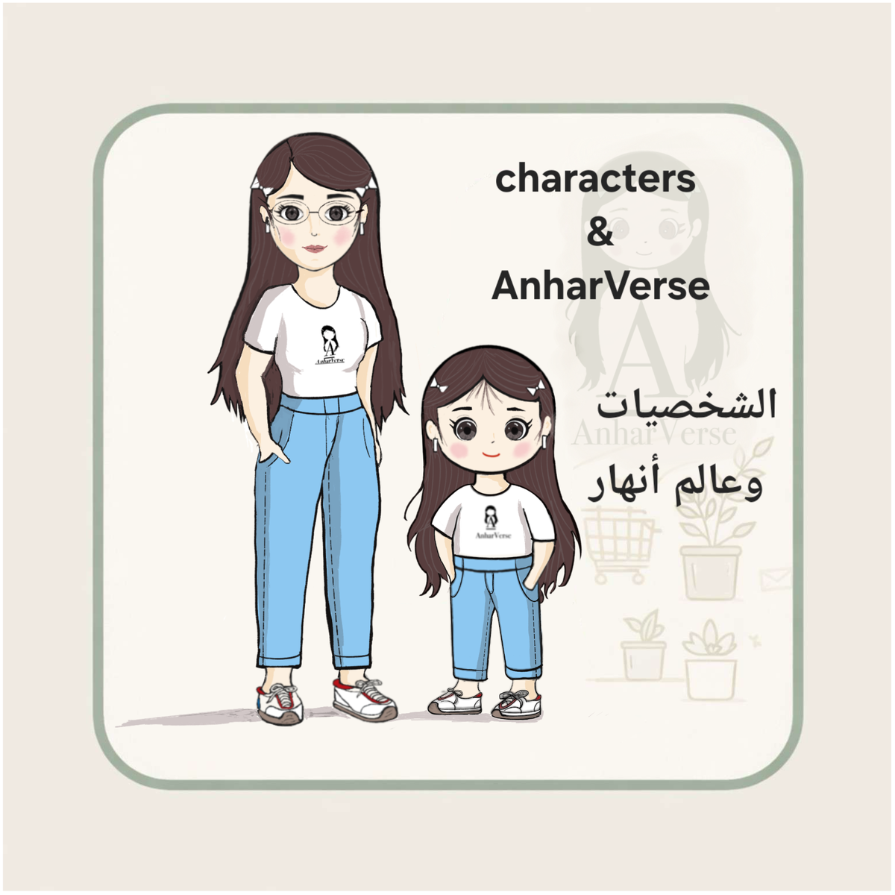
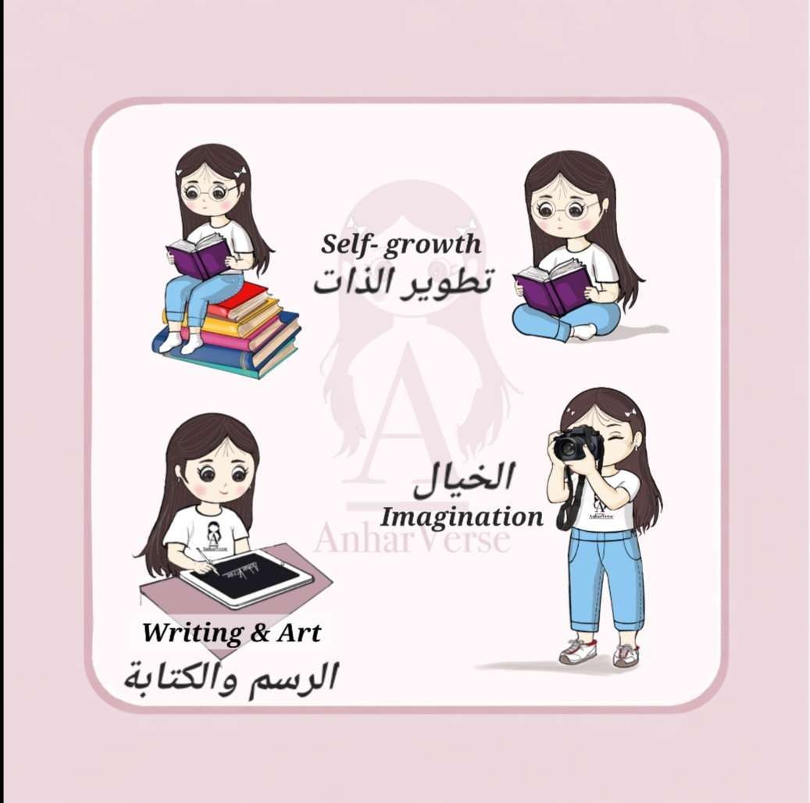
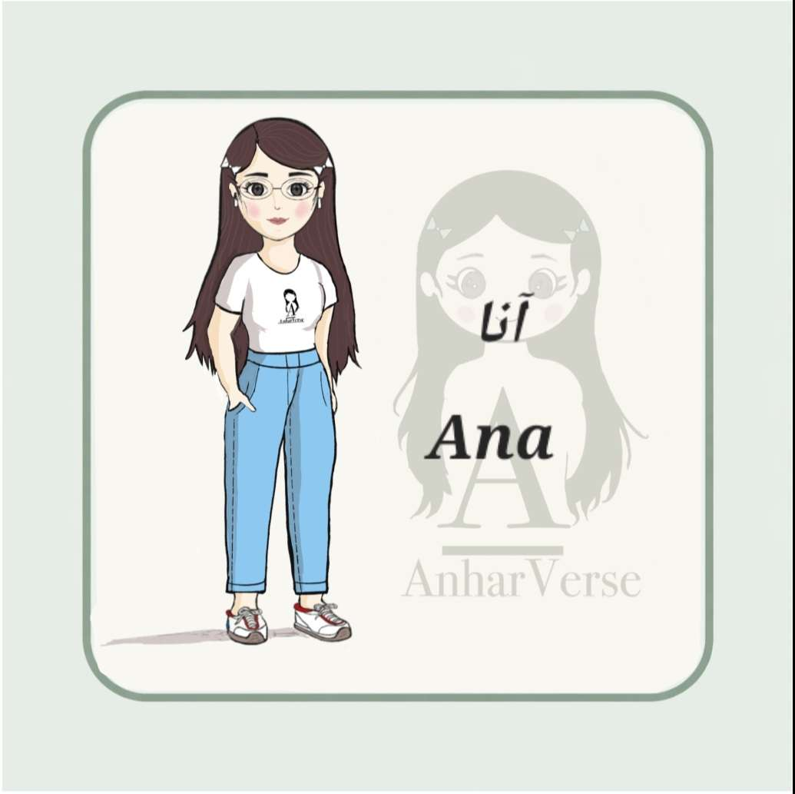
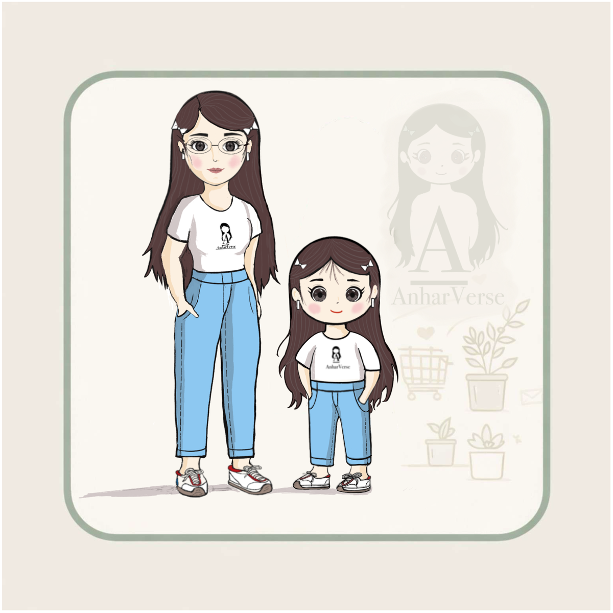

صفحة اكتشف
حين تتجسد الفكرة في شخصيات

لم تولد نهيرا وآنا كشخصيتين منفصلتين،
بل كامتدادٍ لتجربةٍ واحدةٍ نمت فيها المهارات،
وتشكّل الوعي عبر سنواتٍ من البحث والتعلّم.
هما الوجهان المختلفان لرحلةٍ واحدة —
رحلة أنهار.
نهيرا – الإبداع يبدأ من الخيال

نهيرا تمثل الجانب الإبداعي والإنساني من الرحلة.
هي الطفلة التي ترى العالم بعين الخيال،
وتعبّر عن ذاتها من خلال الرسم، والتصوير، والقصص.
تقدّم مفاهيم تطوير الذات بلغةٍ بسيطة قريبة من القلب،
تناسب الطفل والمراهق في آنٍ واحد.
نهيرا تعبّر عن

- التعبير بالرسم والألوان
- تطوير الذات بلغةٍ قصصية
- القراءة وبناء الوعي المبكر
نهيرا لا تُعلّم… بل تفتح باب الفهم.
آنا – الفكرة حين تنضج

آنا تمثل الجانب الواعي والعملي من التجربة.
هي معلمة ورائدة أعمال،
ترى التعليم مساحةً للفهم قبل أن يكون شرحًا،
وترى ريادة الأعمال كتحويلٍ واعٍ للفكرة إلى أثرٍ ملموس.
آنا تعبّر عن

- التعليم والتربية
- العلاقة بين المعلمة والطالبة
- ريادة الأعمال من منظورٍ إنساني وتجريبي
🌱 آنا هي الفكرة حين تنضج وتتحول إلى أثر.
العلاقة بين نهيرا وآنا

نهيرا وآنا ليستا شخصيتين منفصلتين،
بل وجهان لرحلةٍ واحدةٍ تعكسان تعدد المهارات والتجارب
التي شكّلت مسار المؤلفة أنهار.
فبين الإبداع والوعي،
وبين الفكرة والتطبيق،
تتشكل رسالة هذا المشروع.
هنا تبدأ القصة… وتستمر.